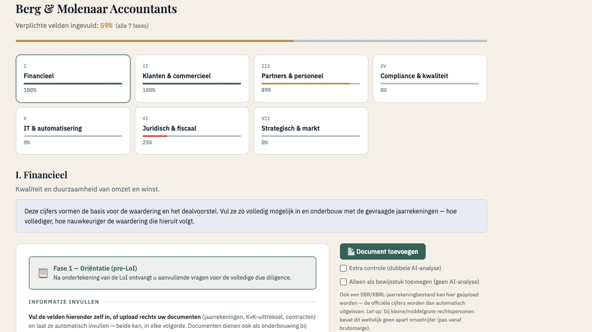

Home › Platform
Koers voor Morgen Platform
Eén traject. Eén dossier. Van voorbereiding tot closing.
Een overnametraject bestaat uit honderden documenten, tientallen vragen, openstaande acties en meerdere partijen. In de praktijk raakt dat verspreid over e-mail, Excel en losse datarooms. Het platform brengt het volledige traject samen in één beheersbare omgeving — met de adviseur als regisseur.

Het onderscheid
Een dataroom dekt één fase. Koers voor Morgen draagt het hele traject.
Een virtuele dataroom is gemaakt om documenten te delen tijdens het boekenonderzoek. Nuttig, maar het is één schakel. Een overname begint eerder — bij de voorbereiding en de strategische vraag — en eindigt later, bij de onderhandeling, de closing en de overdracht. Koers voor Morgen loopt dat hele traject mee: dezelfde omgeving, hetzelfde dossier, van de eerste voorbereiding tot na de handtekening.
Hoe het werkt
Alles op z'n plek — per fase en per rol.
Eén centrale dataroom
Documenten geordend per due-diligence-categorie en per fase. Geen losse mappen, geen e-mailbijlagen die kwijtraken.
Vragen, antwoorden en overleggen bij elkaar
Elke vraag hangt aan het document of de post waar hij over gaat. Overleggen en besluiten staan in dezelfde context.
Altijd zicht op wat ontbreekt
Het platform houdt per fase bij welke documenten er zijn en welke nog moeten komen — zichtbaar voor iedereen die eraan werkt.
Rol- en fase-toegang
Koper, verkoper, adviseur en meekijkers zien alleen wat bij hun rol en de huidige fase hoort. Meer over dataroom & fases →
AI die het dossier bewaakt
De AI signaleert. U beslist.
Het platform leest mee met het dossier en geeft drie soorten signaal — en verder niets. Het vult geen velden in en doet geen aanname.
Ontbrekend document
"Voor fase 2 ontbreekt de huurovereenkomst van het kantoorpand." — een gat in de dekking, benoemd voordat het een probleem wordt.
Afwijking tussen documenten
"De omzet in de jaarrekening wijkt af van het klantenoverzicht." — het platform legt de stukken naast elkaar; de adviseur beoordeelt.
Actie vereist
"Deze vraag staat 9 dagen open." — openstaande punten en acties blijven zichtbaar tot ze zijn afgerond.
Herleidbaar
Elke waarde herleidbaar naar het brondocument.
Cijfers die in het platform staan, zijn aanklikbaar tot de bladzijde in het document waar ze vandaan komen. Geen overgetypte getallen zonder herkomst. Wie het dossier later leest — een koper, een financier, een accountant — kan elke waarde terugvinden.
AI helpt. Bij twijfel doet het systeem geen aanname, maar meldt het. De beoordeling blijft mensenwerk.
Zo werkt een traject
Vijf stappen, één omgeving.
Start
Traject aangemaakt, rollen en fasen ingericht.
Dataroom
Documenten geüpload en per categorie geordend.
Vragen & acties
Q&A en openstaande punten, gekoppeld aan de stukken.
Voortgang
Dekking per fase, signalen, wat er nog moet.
Closing
Dossier compleet, afgesloten en te archiveren.
Voor adviseurs
Uw eigen praktijk. Uw eigen regie.
Zet Koers voor Morgen zelfstandig in bij uw eigen klanten en transacties — met eigen huisstijl, een trajectlimiet en modules naar keuze (contracten, AI-analyse, Q&A, export, meekijkers, matching). U bent klant van het platform; Marcel hoeft er niet bij.
Beveiliging & gegevens
Zo gaan we om met uw transactiedata.
Opslag in de EU (Frankfurt, ISO 27001 / SOC 2), versleuteld transport, rol- en fase-toegang, meekijkers read-only en intrekbaar, AI-verwerking onder standaard contractbepalingen, verwijdering na 14 dagen, en een technisch afgedwongen scheiding tussen trajecten van verschillende adviseurs.
Zelf uitproberen
Begin met de gratis bedrijfsscan, of vraag toegang aan als adviseur.